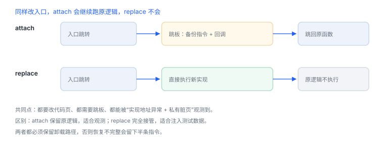
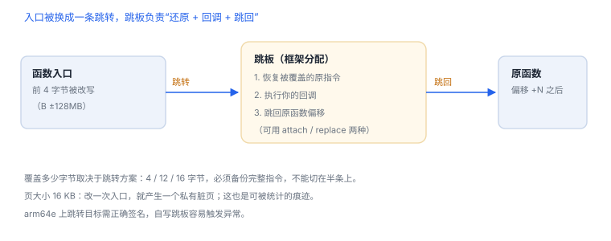
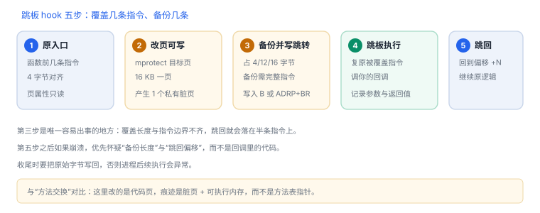

Interceptor：方法级 hook 的字节实现
一次 hook 就是在入口写几条跳转指令，再把被覆盖的原文搬到跳板
Interceptor 不是“监听调用”，而是真的改代码：入口被替换成跳转，跳到框架分配的跳板，那里保存原指令副本与你的回调。理解这四步，崩溃与“挂上没反应”都能定位。
场景 断点命中、参数正确，跳回之后却崩了。十有八九是入口被覆盖的字节数与跳转方案不匹配，跳回时落在半条指令上。
1. attach 与 replace
| 方式 | 改什么 | 原逻辑 | 能否改返回值 |
|---|---|---|---|
Interceptor.attach | 入口跳转 + 跳板回调 | 照常执行 | 可以（onLeave 里替换） |
Interceptor.replace | 入口直接指向你的实现 | 不再执行 | 完全由你决定 |
两者都会修改代码页；区别只在跳板里是否继续执行备份的原指令。

2. 四个动作
- 把目标函数所在页改为可写（页大小 16 KB）。
- 备份入口处将被覆盖的指令（按跳转方案占 4 / 12 / 16 字节）。
- 写入跳转，跳到跳板。
- 跳板恢复原指令、执行回调、跳回原函数偏移继续执行。
JavaScript：读取参数与返回值（自有应用）
const m = ObjC.classes.LoginService['- requestToken:'];
Interceptor.attach(m.implementation, {
onEnter(args) {
this.account = new ObjC.Object(args[2]).toString();
},
onLeave(retval) {
console.log(this.account, new ObjC.Object(retval));
}
});

3. 跳转方案的字节账
| 方案 | 占用 | 范围 | 覆盖的原指令 |
|---|---|---|---|
B imm26 | 4 字节 | ±128 MB | 1 条 |
ADRP + ADD + BR | 12 字节 | ±4 GB | 3 条 |
LDR literal + BR（含 8 字节地址） | 16 字节 | 全地址空间 | 4 条 |
arm64 指令定长 4 字节，所以“覆盖几条”是可算的：方案占多少字节，就要备份多少字节，且必须是完整指令，不能切在半条上。
4. 三个致命细节
| 细节 | 后果 | 规避 |
|---|---|---|
| 覆盖长度与指令边界不齐 | 跳回后执行到半个指令，随机崩溃 | 按 4 字节对齐，保留完整指令 |
| 其他线程正在执行被改写的指令 | 读到“半条指令” | 安装时暂停线程或一次性写入 |
| arm64e 指针签名 | 跳转目标校验失败 | 依赖框架对架构的支持，别自写跳板 |
经验值
单个模块挂 10 个点以内比较稳定；几十个点时应先找汇聚点（如统一的网络出口、统一的路由），而不是逐方法铺开。每多一个点就多一块可执行内存与一次入口改写。
单个模块挂 10 个点以内比较稳定；几十个点时应先找汇聚点（如统一的网络出口、统一的路由），而不是逐方法铺开。每多一个点就多一块可执行内存与一次入口改写。
5. 失败分流
| 现象 | 最可能原因 | 查哪里 |
|---|---|---|
| 挂上但不触发 | 调用走了内联副本或另一实现 | 在调用点下断点确认真实目标 |
| 偶发崩溃 | 并发执行到半条指令 | 减少 hook、安装时暂停线程 |
| 一挂就崩 | 覆盖长度算错或页权限未恢复 | 核对跳转方案与架构 |
| 返回值替换无效 | 返回结构体或走了 replace | 确认调用约定与类型编码 |
| 卸载后仍异常 | 备份指令未完整恢复 | 重启进程验证 |
6. 能被观测到什么
- 方法实现地址落在非映像区间（跳板）。
- 代码页变为可写，私有脏页增加一页（16 KB）。
- 镜像列表出现额外的可执行映射。
- 短函数（少于覆盖长度）无法安全 hook，可能直接失败。
7. 数据细节：一次 hook 的内存账
| 项 | 占用 | 说明 |
|---|---|---|
| 入口改写 | 4 / 12 / 16 字节 | 取决于跳转方案 |
| 备份原指令 | 与改写等长 | 保存在跳板里 |
| 跳板代码 | 数十字节 | 备份 + 回调 + 跳回 |
| 私有脏页 | 16 KB / 每页 | 首次写入口所在页时产生 |
所以“挂一个点”的成本 ≈ 一页脏内存 + 一条新的执行路径；挂几十个点，脏页就以十为单位增长。
8. 自测
- 为什么
attach也要改入口指令？ B只有 ±128 MB，框架如何保证跳板可达？- “覆盖长度不够”会导致哪一类崩溃？为什么？
- 16 KB 页大小对 hook 的痕迹有什么影响？